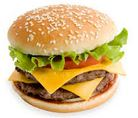

Have a look at some of the projects I am working on
My first assignmentBurgertiiiime
Blow off some steam (various shenanigans)
Here are some of my favorite things to eat:
- dried mango
- pineapple
- pizza
- ice cream
- carrots
- fresh tortillas
- bananas
- chicken
- rice
- burritos
- teriyaki
- yellow curry